SCTF 2026 Writeup
期末考试把几个比赛全错过了，sad
只写了两个 MISC，别的题一题都不会写😰
🧩 MISC
Let's dance together!
来来让我们蹦蹦跳跳
天天唱歌跳舞乐逍遥
让我们一起来玩耍
下发五张 jpg 文件，以及一个 Zipcrypto Deflate 加密的压缩包，其中有一段视频
五张 jpg 文件的内容都是使用神秘字体的文本。不过可以初步推断部分字体是替换密码，所以或许可以用 quipqiup 进行爆破（？）
第一个 jpg 的内容：
在 List of Symbols Cipher - Online Decoder, Translator, Identifier 上一个个确认，发现字符集符合 ZODIAC KILLER CIPHER 的内容
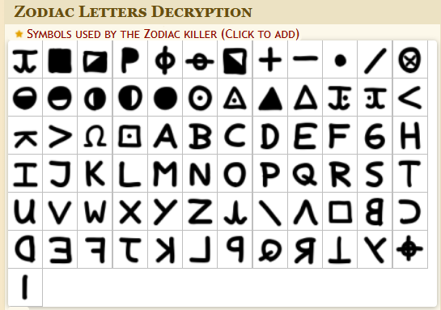
变种选择 Z408 (First cryptogram)，可以还原：
| A CAPITAL LETTER WITH TWO TALL PEAKS AND A VALLEY BETWEEN THEM
A DIGIT SHAPED LIKE A HOLLOW FULL MOON
A DIGIT SHAPED LIKE A HOLLOW FULL MOON
A CAPITAL LETTER BUILT FROM TWO TALL WALLS AND A SLANTING BRIDGE
|
似乎是在暗示 M00N（因为我先解码的第五个 jpg，了解到常规情况下答案如果是字母则是大写字母）
第二个 jpg 的内容：
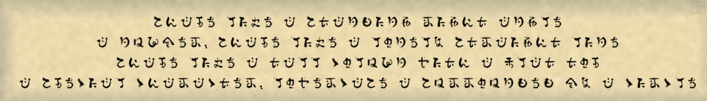
完全没见过，但是可以推测是单表替换（比如第二行第一个字符应该是 A）
于是我将每一个字符对应了 a~z 的映射，使用 quipqiup 爆破出来了
| 手敲的，累 |
|---|
| abcde fghe c aicjkgjl mglbi cjlfe
c jnopem abcde fghe c fqjefr aimcglbi fgje
abcde fghe c icff sqfnoj tgib c ufci iqd
c adesgcf sbcmcsiem fqtemscae c anmmqnjkek pr c sgmsfe
# clue: c=a (I guess)
|
| quipquip result |
|---|
| shape like a standing right angle
a number shape like a lonely straight line
shape like a tall column with a flat top
a special character lowercase a surrounded by a circle
|
推测是 L1T@
第三个 jpg 的内容：
这不是小篆吗？肉眼判断大部分，剩下的丢给转换器逐个确认：
| 带尾巴的圆形的数字
像横着的沙漏型状
像小棍子的数字
两个叠起来的缺少右侧的盒子
|
第一个数字可能是 6 / 9；第二个字符呃呃，要不我猜个 ∞？；第三个数字 1；第四个推测是字母 E
第四个 jpg 的内容：
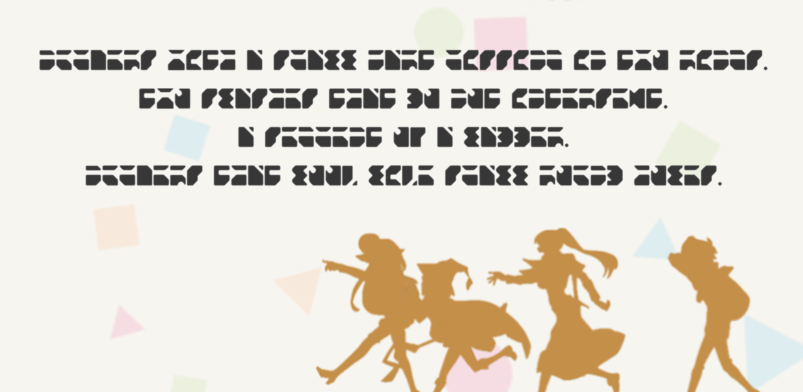
一眼和第二张图一样是单表替换
| 还是手敲的，累 |
|---|
| abcdefg hijk l gclmm nlfj ciggiao ia jhp fiaog.
jhp gmlgkeg jklj qp apj iajefgerj.
l geoceaj ps l mlqqef.
abcdefg jklj mppt mite gclmm fpbaq kpmeg.
# clue: l=a (I guess)
|
| quipquip result |
|---|
| numbers with a small part missing in two rings.
two slashes that do not intersect.
a segment of a ladder.
numbers that look like small round holes.
|
推测是 3VH0
第五个 jpg 的内容：
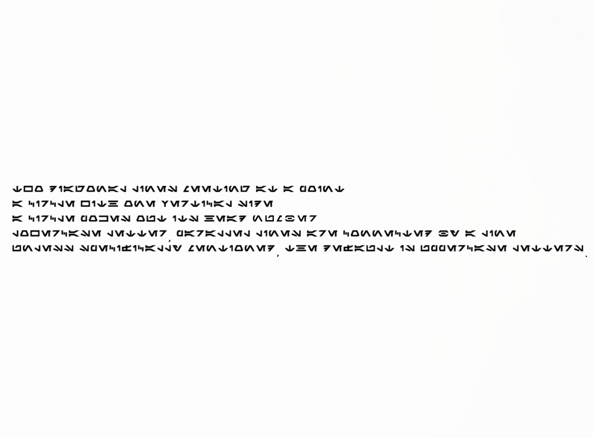
依旧在 List of Symbols Cipher - Online Decoder, Translator, Identifier 上一个个确认，发现字符集符合 Aurebesh 字体
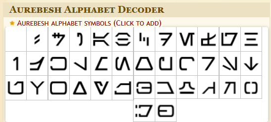
还原一下
| TWO DIAGONAL LINES MEETING AT A POINT
A CIRCLE WITH ONE VERTICAL SIDE
A CIRCLE POKES OUT ITS HEAD
LOWERCASE LETTER, PARALLEL LINES ARE CONNECTED BY A LINE
UNLESS SPECIFICALLY MENTIONED, THE DEFAULT IS UPPERCASE LETTERS.
|
前四条应该还在描述字符的特征，第一个字符大概率是 X，或许是 K，第二个字符大概率 Q，也可能是 D，第三个字符可能是 6，第四个字符可能是 z
最后一句话提示字母默认是大写的
总结一下候选密码：
| M00NL1T@6_1E3VH0XQ6z
9 KD
|
直接丢 ARCHPR 爆破
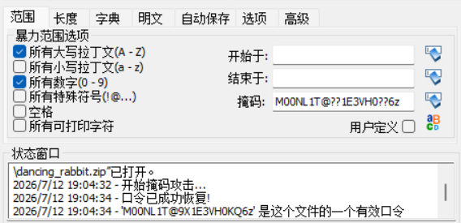
得到密码 M00NL1T@9X1E3VH0KQ6z
解压压缩包后得到一个 mp4 文件，binwalk 发现附带一个加密的压缩包（内容为 flag.txt）。视频本身内容是兔子跳舞，推测是基于舞蹈动作的加密（Dancing Men Chiper）
结合视频提示，可以提取出这几个关键图
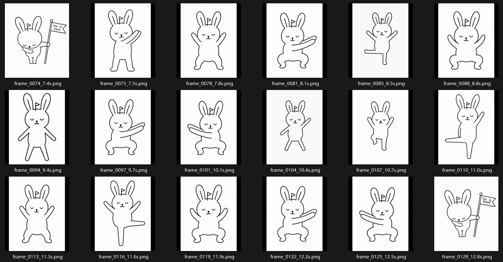
对照着拼可以得出结果
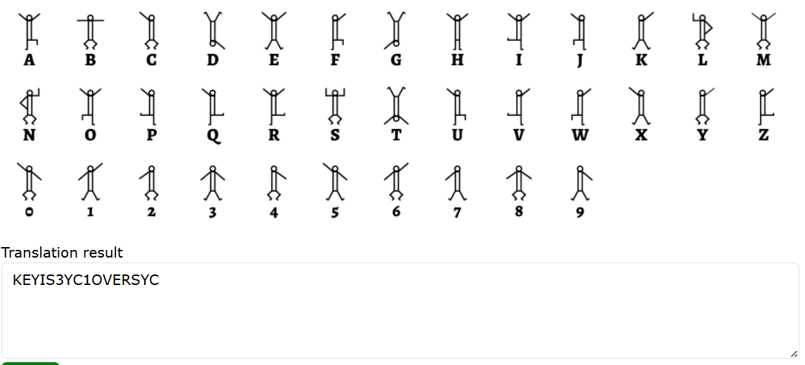
用 3YC1OVERSYC 打开压缩包，得到 Flag
| SCTF{You_can_solve_this? Really? I_dont_believe}
|
（这题目出的难评）
SYC4113
深陷兔子洞中……
那个夏天蝉声四起
你知道这一切不过都是幻梦一场，
但愿永远永远不要醒来。
就给了这么一张图：
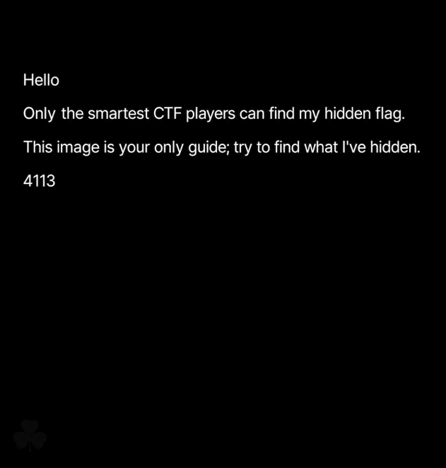
上次看到这样的图还是在 CICADA3301，大概率是个致敬题
根据 CICADA3301 那个图片的解法，图片末尾用凯撒加密附了一段数据，这里的处理差不多
| JLHZHYZH`ZAo{{wzA66ptn5jku85}pw6p6=h9hj:>>=@==8f8>?88?>;;>5qwn
|
考虑到出现了神秘的字符集，使用 ROT47 进行爆破
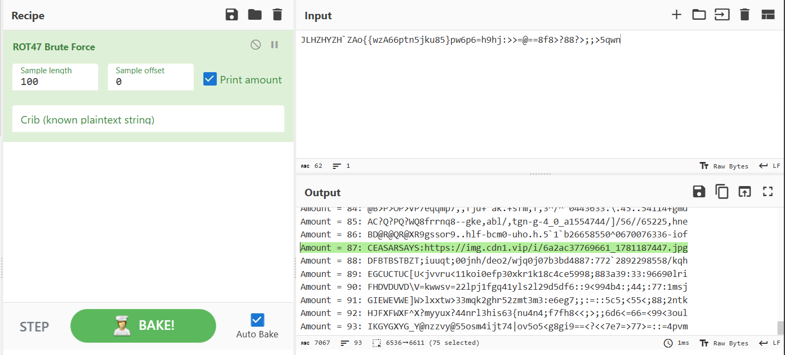
得到下一个图片的网站：https://img.cdn1.vip/i/6a2ac37769661_1781187447.jpg，下载
一模一样的，用 outguess 提取内容：
| ❯ outguess -r 6a2ac37769661_1781187447.jpg output.txt
Reading 6a2ac37769661_1781187447.jpg....
Extracting usable bits: 411183 bits
Steg retrieve: seed: 172, len: 303
|
得到经典内容
1
2
3
4
5
6
7
8
9
10
11
12
13
14
15
16
17
18
19
20
21
22
23
24
25
26
27
28
29 | URL:https://www.iplant.cn/foc/pdf/Fabaceae.pdf
VHJpZm9saXVtIHJlcGVucw==550 # Base64: Trifolium repens
2:4:2:1
2:7:8:4
2:9:7:2
2:10:6:1
3:1:2:7
3:2:1:6
4:1:1:9
4:2:6:1
4:4:8:3
5:1:4:9
6:1:1:5
7:1:1:4
7:7:2:1
7:9:1:6
9:1:3:6
9:1:4:2
9:3:5:1
9:3:10:2
9:5:2:8
9:11:2:4
11:1:6:6
11:2:5:6
11:3:1:4
11:4:4:2
11:5:4:6
12:1:1:9
12:1:4:3
|
第一行给出一个论文形式的 PDF，第二行指出了 550 页的 Trifolium repens
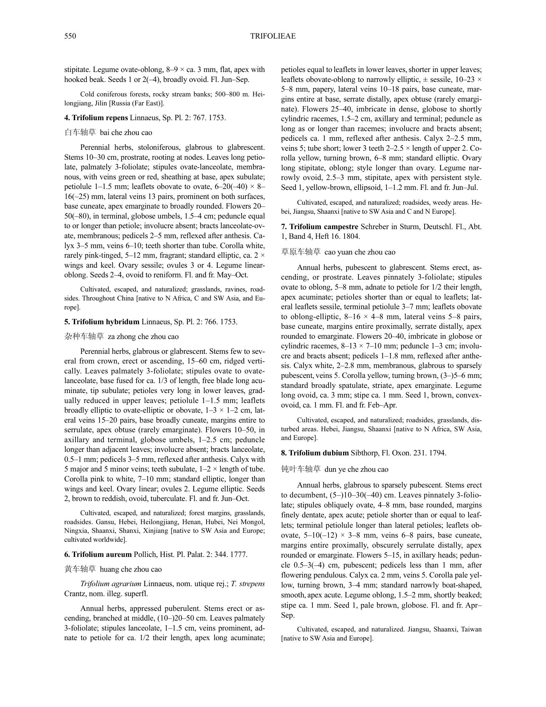
接下来的 a:b:c:d 分成四个部分。注意到 a 的范围从 2 ~ 12，最大值恰好对应上图中所有满足首行缩进的段落的段落个数
因此可以推测 a:b:c:d 的划分为（括号内的内容是经过验证的结论）
| a: 段落数
b: 行数
c: 单词数（由连字符后半部分组成的单词视为一个单词，2–5 这样的属于一个单词）
d: 字符数（由连字符后半部分组成的单词只考虑当前行的部分，考虑标点符号）
|
对着填一下
1
2
3
4
5
6
7
8
9
10
11
12
13
14
15
16
17
18
19
20
21
22
23
24
25
26
27 | 2:4:2:1 w
2:7:8:4 w
2:9:7:2 b
2:10:6:1 r
3:1:2:7 d
3:2:1:6 .
4:1:1:9 l
4:2:6:1 a
4:4:8:3 n
5:1:4:9 z
6:1:1:5 o
7:1:1:4 u
7:7:2:1 m
7:9:1:6 .
9:1:3:6 c
9:1:4:2 o
9:3:5:1 m
9:3:10:2 /
9:5:2:8 s
9:11:2:4 y
11:1:6:6 c
11:2:5:6 s
11:3:1:4 e
11:4:4:2 c
11:5:4:6 r
12:1:1:9 e
12:1:4:3 t
|
得到网址
| wwbrd.lanzoum.com/sycsecret
|
蓝奏云链接，下载得到一个 secret.zip，内含两个文件：hint.wav 和 morse.mp3
前者 hint.wav 依旧是仿隔壁 3301 的，内容是：
| Well done! Now you need to find three prime numbers, one of which is 523. Good luck!
|
也就是 图片宽×高×523 = 631×661×523 = 218138593
后者 morse.mp3 在 Morse Code Adaptive Audio Decoder | Morse Code World 网站解码一下得到：
| CONTACT US USING SYC FOLLOWED BY THE PRODUCT OF THREE PRIME NUMBERS AND A 163 EMAIL ADDRESS.
|
因此给 SYC218138593@163.com 发个邮件，自动回复得到
| 其实赛后这个邮箱的自动回复关闭了，翻官方题解仓库翻到的回复原文 |
|---|
| Transmission accepted.
The image lied.
The flower indexed the path.
The signal named the ritual.
The primes opened the mailbox.
You are not early.
But you are worth it:SCTF{A_voice_from_a_high_place_naturally_carries_far-it_is_not_relying_on_the_autumn_wind}
4113
|
得到 Flag
| SCTF{A_voice_from_a_high_place_naturally_carries_far-it_is_not_relying_on_the_autumn_wind}
|
{kind=link}
{kind=link}
{kind=link}
{kind=link}
{kind=link}
{kind=link}
{kind=link}
{kind=link}
{kind=link}
{kind=link}
{kind=link}
{kind=link}
{kind=link}
{kind=link}